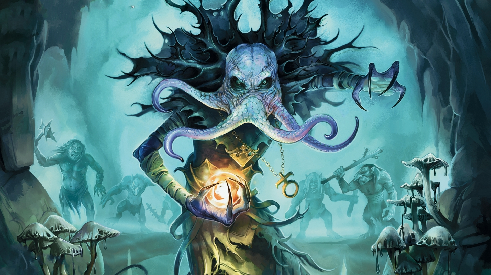

"Dungeons & Dragons (D&D)" é muito mais do que um simples jogo de mesa. É um portal para
mundos de imaginação e aventura, onde a única limitação é a sua criatividade.
Neste universo fascinante, você se torna o herói de sua própria história épica,
enfrentando desafios, forjando alianças e explorando terras mágicas repletas de perigos e
maravilhas.
Imagine-se em um castelo antigo, escuridão ao redor, com apenas uma tocha para iluminar o
caminho.
Você é um valente guerreiro, um sábio mago, um furtivo ladrão ou qualquer personagem que sua
mente possa conceber.
Seu destino está nas mãos dos dados, mas suas escolhas moldam o rumo da narrativa.
Então, pegue seus dados, abra o Livro do Jogador e embarque nessa aventura única.
Em Dungeons & Dragons, o mundo é seu playground, e a aventura aguarda aqueles corajosos o
suficiente para desbravá-lo.
Seja herói, seja vilão, mas acima de tudo, seja lendário!
